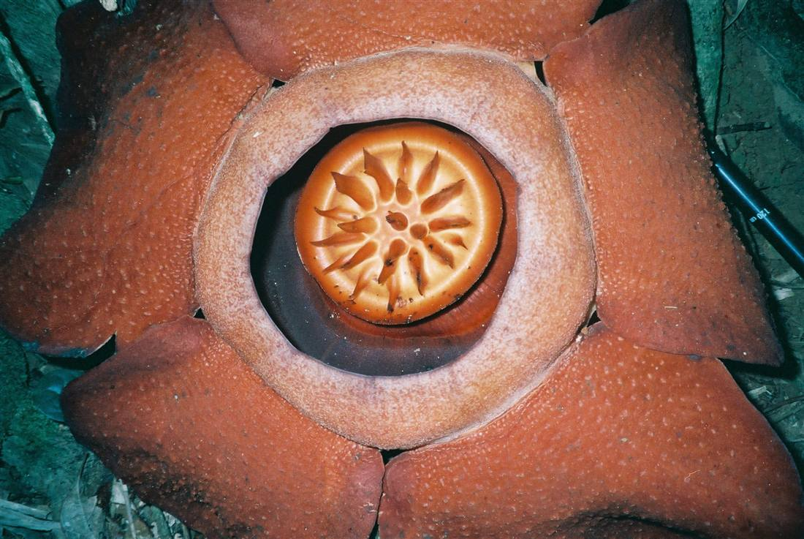

ทริปข้ามจังหวัด
รถรับส่งภูเก็ตเขาสก: เส้นทาง ราคา และวิธีจอง
คู่มือครบสำหรับ รถรับส่งภูเก็ตเขาสก และ รถตู้ภูเก็ตไปเขาสก — เขื่อนเชี่ยวหลาน อุทยานแห่งชาติเขาสก พร้อมราคาและเคล็ดลับวางแผน
25 มิถุนายน 2026
รถรับส่งภูเก็ตเขาสก คืออะไร
Infinity Transport Phuket — รถรับส่งภูเก็ตไปเขาสกและอุทยานแห่งชาติ
รถรับส่งภูเก็ตเขาสก คือบริการ รถรับส่งภูเก็ต ที่เชื่อมต่อจากเกาะภูเก็ตไปยังอุทยานแห่งชาติเขาสก จังหวัดสุราษฎร์ธานี โดยใช้ รถตู้พร้อมคนขับ
เหมาะกับทริปวันเดียว (ไปเช้า-กลับเย็น) หรือพักค้างคืนที่รีสอร์ตริมเขื่อนเชี่ยวหลาน แล้วรับกลับภูเก็ต
จุดหมายยอดนิยมในเขาสก
เขื่อนเชี่ยวหลาน (Cheow Lan Lake)
อ่างเก็บน้ำสีเขียวมรกต ล่องเรือชมหน้าผาและถ้ำ — อ่านแผนเที่ยวที่ บทความเขาสก
ล่องแพและป่าฝน
กิจกรรมยอดนิยมในช่วงฤดูฝน แนะนำจองโปรแกรมล่วงหน้า
ถ้ำและเส้นทางเดินป่า
ถ้ำหินปูนและเส้นทางธรรมชาติในอุทยาน
รีสอร์ตริมเขื่อน
บังกะโลริมน้ำ เหมาะพักค้างคืน 1–2 คืน

ป่าฝนเขาสก — ธรรมชาติที่ห่างจากภูเก็ตประมาณ 2–3 ชั่วโมง
เส้นทางและระยะเวลาเดินทางโดยประมาณ
เส้นทาง
ระยะเวลา (โดยประมาณ)
หมายเหตุ
ภูเก็ต → ทางเข้าอุทยานเขาสก
2–2.5 ชั่วโมง
ขึ้นกับโซนที่พักในภูเก็ต
สนามบินภูเก็ต → เขาสก
2–2.5 ชั่วโมง
เหมาะรับจากสนามบินตรงที่พัก
ภูเก็ต → เขื่อนเชี่ยวหลาน (ท่าเรือ)
2.5–3 ชั่วโมง
ต่อเรือล่องเขื่อนที่ท่าเรือ
ภูเก็ต → พังงา (ต่อ)
1–2 ชั่วโมง
ดู รถรับส่งภูเก็ตพังงา
แพ็กเกจรถรับส่งภูเก็ตเขาสก
รับส่งเที่ยวเดียว
เช่น สนามบินภูเก็ต → รีสอร์ตเขาสก หรือ โรงแรมภูเก็ต → ทางเข้าอุทยาน
ทริปวันเดียวไป-กลับ
เหมา รถตู้ภูเก็ตรายวัน ไปล่องเรือเขื่อนเชี่ยวหลาน แล้วกลับภูเก็ตตอนเย็น — ออกเช้าเร็ว
พักค้างคืน
ส่งไปรีสอร์ตริมเขื่อน 1–2 คืน แล้วรับกลับภูเก็ตหรือสนามบิน
เลือกรถตามจำนวนคน: รถตู้ 9 ที่นั่ง สำหรับครอบครัว หรือ Sprinter สำหรับกลุ่ม — ดู หน้ารถทั้งหมด
ราคารถรับส่งภูเก็ตเขาสก
ราคาขึ้นกับประเภทรถ ระยะทาง และรูปแบบบริการ (เที่ยวเดียว / ไป-กลับ / เหมารายวัน) ทริปข้ามจังหวัดและระยะทางไกลมีราคาสูงกว่ารับส่งในเกาะ
ตรวจสอบแพ็กเกจที่ หน้าราคา หรือขอใบเสนอราคาที่ หน้าติดต่อ
เคล็ดลับวางทริปภูเก็ต–เขาสก
ออกเช้า 6:00–7:00 น. ถ้าทริปวันเดียว เพื่อมีเวลาล่องเรือและกลับก่อนมืด
ช่วงฝน (พ.ค.–ต.ค.) ถนนลื่น เตรียมเวลาเผื่อและเสื้อกันฝน
จองที่พักและเรือล่องเขื่อนล่วงหน้า โดยเฉพาะช่วงไฮซีซน
แจ้งจุดรับ-ส่งที่ชัดเจน รวมทางเข้ารีสอร์ตริมเขื่อน
เตรียมยากันยุงและรองเท้าเดินป่าสำหรับกิจกรรมในป่า
วิธีจองรถรับส่งภูเก็ตเขาสก
ระบุวันที่ จุดรับ (ภูเก็ต/สนามบิน) และจุดหมายในเขาสก
แจ้งจำนวนผู้โดยสารและแพ็กเกจ (เที่ยวเดียว / ไป-กลับ / เหมาวัน / พักค้าง)
เลือกรถจาก หน้ารถทั้งหมด
ยืนยันผ่าน หน้าจอง LINE หรือโทร 062 664 4542
Phuket to Khao Sok transfer
Infinity Transport Phuket offers Phuket to Khao Sok transfer and daily van charters to Cheow Lan Lake and Khao Sok National Park. Book via contact page .
Book Phuket–Khao Sok transfer
จองรถไปเขาสก
กลับไปหน้าบทความทั้งหมด
คำถามที่พบบ่อย (FAQ)
ภูเก็ตไปเขาสก ใช้เวลานานแค่ไหน?
โดยทั่วไป 2–3 ชั่วโมง ขึ้นกับจุดหมายและโซนที่พักในภูเก็ต
ไปเช้า-กลับเย็นในวันเดียวได้ไหม?
ได้ครับ แต่ต้องออกเช้ามาก (ประมาณ 6:00–7:00 น.) เพื่อมีเวลาล่องเรือและกลับก่อนมืด
รับจากสนามบินภูเก็ตไปรีสอร์ตเขาสกได้ไหม?
ได้ แจ้งเลขเที่ยวบินและชื่อรีสอร์ตล่วงหน้า
ควรพักค้างคืนที่เขาสกกี่คืน?
แนะนำอย่างน้อย 1 คืน ถ้าต้องการล่องเรือเขื่อนและเดินป่าแบบไม่รีบ